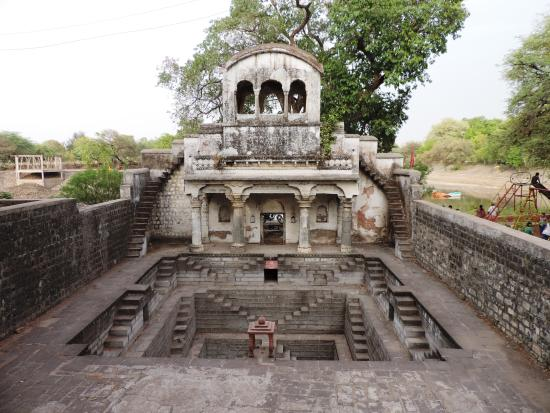

उज्जैन स्थित श्रीराम-जनार्दन मंदिर भी दर्शनीय एवं ऐतिहासिक महत्व से परिपूर्ण है।
इसका निर्माण राजा जयसिंह द्वारा किया गया है। यह मंदिर प्राचीन विष्णुसागर के तट पर स्थित है।

इस मंदिर में 11वीं शताब्दी में बनी शेषशायी विष्णु की तथा 10वीं शताब्दी में निर्मित गोवर्धनधारी कृष्ण की प्रतिमाएं भी लगी हैं।
यहां पर श्रीराम, लक्ष्मण एवं जानकीजी की प्रतिमाएं बनवासी वेशभूषा में उपस्थित हैं।